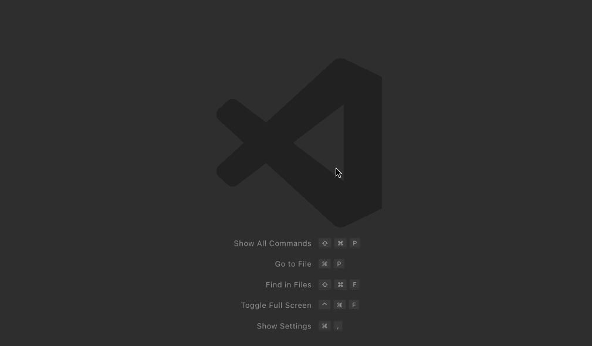

class RubyLsp::Requests::WorkspaceSymbol

The workspace symbol request allows fuzzy searching declarations in the entire project. On VS Code, use CTRL/CMD + T to search for symbols.
Example¶ ↑
# Searching for `Floo` will fuzzy match and return all declarations according to the query, including this `Foo` class class Foo end
Public Class Methods
new(query, index)
click to toggle source
# File lib/ruby_lsp/requests/workspace_symbol.rb, line 25 def initialize(query, index) @query = query @index = index end
Public Instance Methods
run()
click to toggle source
# File lib/ruby_lsp/requests/workspace_symbol.rb, line 31 def run bundle_path = begin Bundler.bundle_path.to_s rescue Bundler::GemfileNotFound nil end @index.fuzzy_search(@query).filter_map do |entry| # If the project is using Sorbet, we let Sorbet handle symbols defined inside the project itself and RBIs, but # we still return entries defined in gems to allow developers to jump directly to the source file_path = entry.file_path if DependencyDetector::HAS_TYPECHECKER && bundle_path && !file_path.start_with?(bundle_path) && !file_path.start_with?(RbConfig::CONFIG["rubylibdir"]) next end kind = kind_for_entry(entry) loc = entry.location # We use the namespace as the container name, but we also use the full name as the regular name. The reason we # do this is to allow people to search for fully qualified names (e.g.: `Foo::Bar`). If we only included the # short name `Bar`, then searching for `Foo::Bar` would not return any results *container, _short_name = entry.name.split("::") Interface::WorkspaceSymbol.new( name: entry.name, container_name: T.must(container).join("::"), kind: kind, location: Interface::Location.new( uri: URI::Generic.from_path(path: file_path).to_s, range: Interface::Range.new( start: Interface::Position.new(line: loc.start_line - 1, character: loc.start_column), end: Interface::Position.new(line: loc.end_line - 1, character: loc.end_column), ), ), ) end end